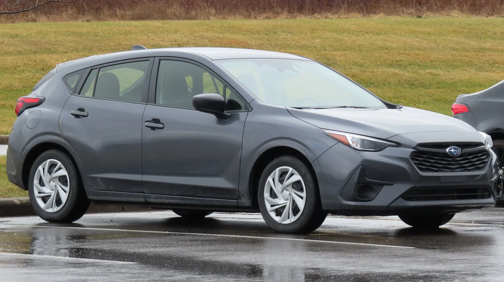
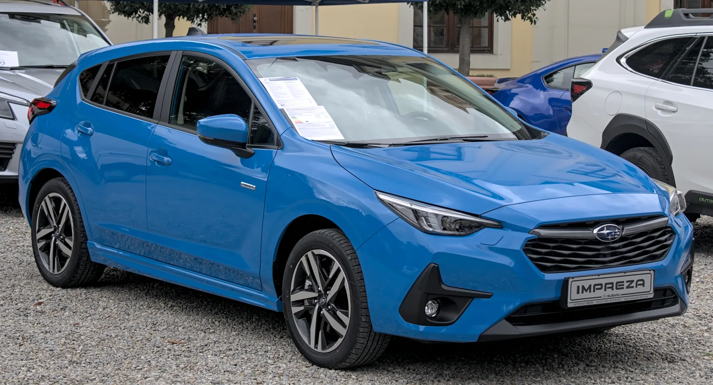
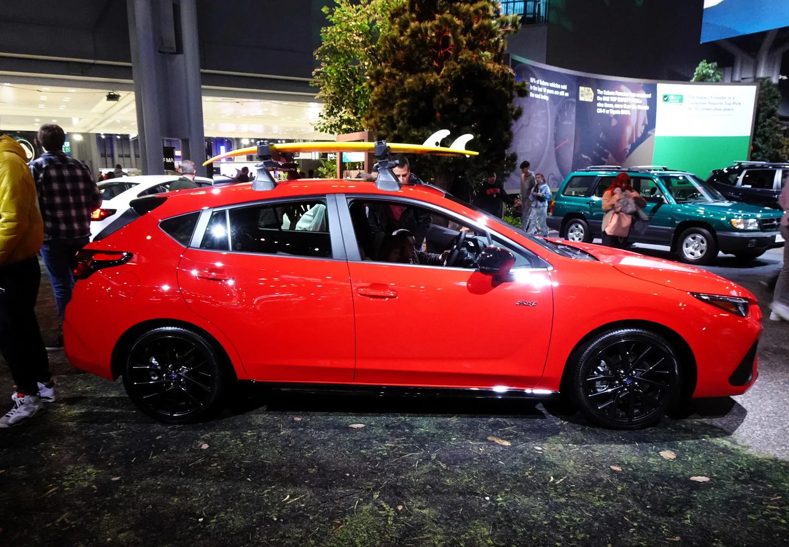
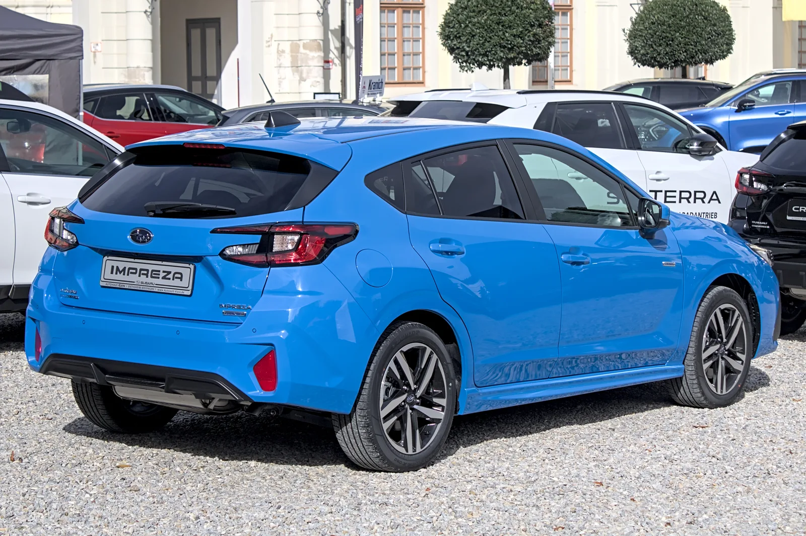
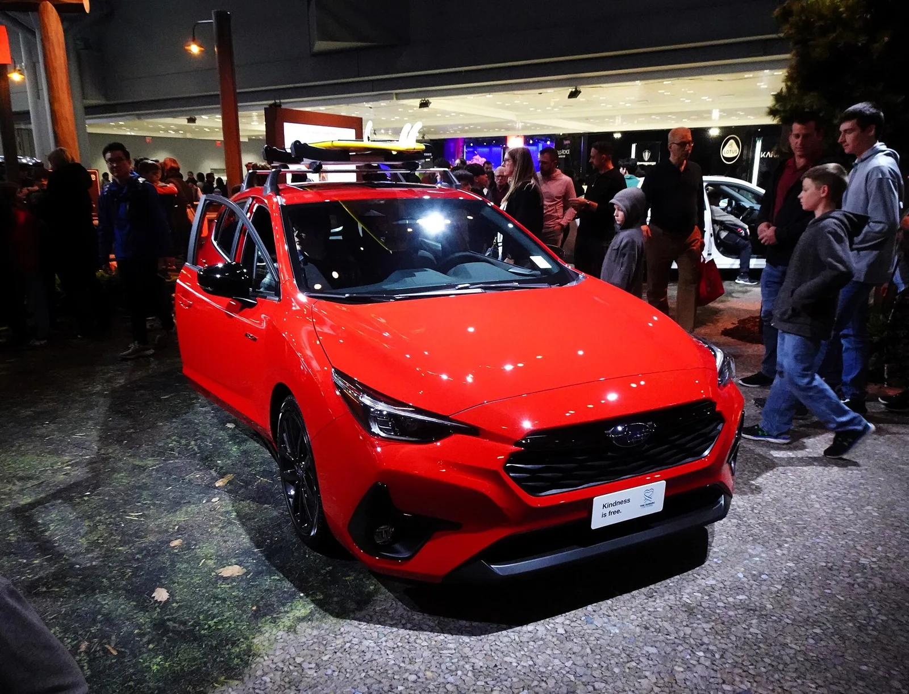
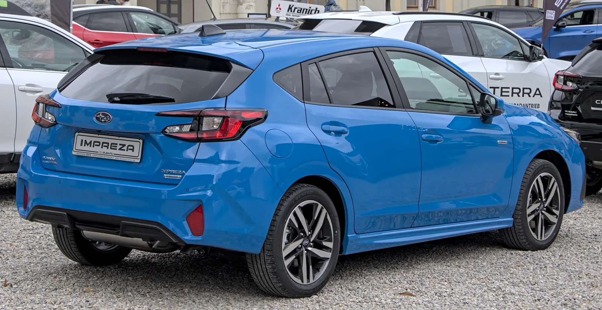

▲ 스바루가 2027년형 임프레자의 베이스 트림을 부활시키며 시작가를 1,950달러 낮췄다 ⓒ Wikimedia Commons
1. 사라졌던 베이스 트림, 1년 만에 부활
스바루가 2027년형 임프레자의 가격표를 새로 짰다. Motor1, Car and Driver, CarBuzz 등 미국 매체 보도를 종합하면, 스바루는 지난해 없앴던 베이스 트림을 1년 만에 부활시키면서 임프레자의 시작가를 오히려 낮췄다. 동시에 RS 트림 전용이었던 2.5리터 복서엔진을 베이스 트림까지 확대해 기본 출력을 28마력 끌어올렸다. 가격은 내리고 성능은 올리는, 흔치 않은 조합이다.
2. 베이스 트림 부활, 가격은 오히려 인하
스바루는 2025년형에서 임프레자의 베이스 트림을 없애고 그 자리를 더 비싼 스포츠(Sport) 트림으로 대체했다. 이 과정에서 임프레자의 시작가는 3,000달러 이상 뛰었다. 그런데 2027년형에서는 이 결정을 뒤집었다. 스포츠 트림이라는 이름 대신 다시 '베이스' 트림을 부활시키면서, 권장소비자가격(MSRP) 자체를 2만6,595달러에서 2만4,595달러로 2,000달러 인하했다.
목적지 탁송료는 1,195달러에서 1,245달러로 50달러 올랐지만, 최종 시작가는 2만5,840달러로 지난해 스포츠 트림(2만7,790달러, 탁송료 포함)보다 1,950달러 저렴해졌다. 반면 상위 트림인 RS는 MSRP 2만9,495달러로 전년과 동일하지만, 탁송료 인상분이 그대로 반영돼 최종가는 3만740달러로 50달러 오르는 데 그쳤다.
| 트림 | 2027년형 | 2026년형 | 증감 |
|---|---|---|---|
| 베이스 | 2만5,840달러 | N/A(2026년엔 폐지) | –1,950달러* |
| 스포츠(2026년 한정) | N/A | 2만7,790달러 | — |
| RS | 3만740달러 | 3만690달러 | +50달러 |
* 2027년형 베이스 트림 가격을 2026년형 스포츠 트림(당시 최저가 트림) 가격과 비교한 수치다.
3. RS 전용이던 2.5리터 엔진, 베이스까지 확대
가격 인하보다 더 눈에 띄는 변화는 파워트레인이다. 그동안 베이스·스포츠 트림에는 152마력·145lb-ft를 내는 2.0리터 4기통 복서엔진이 탑재됐고, RS 트림에만 더 강력한 2.5리터 엔진이 들어갔다. 그런데 2027년형부터는 이 2.5리터 복서엔진을 베이스 트림까지 확대 적용했다.

▲ 2.5리터 복서엔진은 180마력·178lb-ft의 힘을 내며, 이전 세대 베이스 엔진보다 28마력·33lb-ft 강력하다 ⓒ Wikimedia Commons
새 엔진은 180마력, 178lb-ft(약 24.1kgf·m)의 출력을 낸다. 기존 2.0리터 대비 28마력, 33lb-ft 향상된 수치로, 동급 경쟁 모델인 혼다 시빅·토요타 코롤라의 베이스 해치백을 웃돌고 마쓰다3에도 근접하는 수준이라고 매체들은 평가했다. 변속기는 이전과 동일하게 CVT가 유일한 선택지지만, 패들시프트와 8단 가상 기어를 통한 수동 모드 조작이 가능하다. 구동방식은 전 트림 AWD가 표준으로 유지된다.
📍 '미국에서 가장 저렴한 AWD 차량'이라는 타이틀
2만5,840달러라는 가격은 닛산 킥스(2만6,000달러대), 쉐보레 트레일블레이저(2만5,000달러대), 미쓰비시 아웃랜더 스포츠(AWD 사양 기준 2만6,000달러대) 등 경쟁 소형 크로스오버보다도 낮다. CarBuzz는 이를 두고 "미국에서 판매되는 가장 저렴한 AWD 차량"이라고 평가했다. 혼다 시빅·토요타 코롤라 세단이 더 저렴하긴 하지만, 해치백 세그먼트로 한정하면 임프레자가 가장 저렴한 모델이라는 게 공통된 분석이다.

▲ 전 트림 AWD가 표준인 만큼, 루프랙을 활용한 아웃도어 활동에서도 강점을 갖는다는 평가다(사진은 현행 세대 RS 트림 전시 차량) ⓒ Wikimedia Commons
4. 트림별 장비는 어떻게 다른가
가격이 낮아진 만큼 베이스 트림의 편의 장비는 다소 간소화됐다. 11.6인치 통합형 화면 대신 7.0인치 듀얼 스크린(상단 인포테인먼트·하단 공조 제어)이 적용되고, 애플 카플레이·안드로이드 오토는 무선이 아닌 유선으로 제공된다. 스피커는 6개에서 4개로 줄었고, 휠 사이즈도 18인치에서 17인치로 작아졌다. 다만 듀얼존 자동 공조, 어댑티브 크루즈 컨트롤, 차로이탈 경고, 차로유지 보조, 조향 연동 헤드램프 등 안전·편의 기능은 기본 유지된다. 베이스 트림에는 별도 옵션 패키지가 제공되지 않는다.

▲ RS 트림은 18인치 휠과 크리스탈 블랙 실리카 색상의 루프 스포일러, 안개등 등으로 베이스 트림과 차별화된다 ⓒ Wikimedia Commons
RS 트림은 반대로 18인치 휠, 안개등, 크리스탈 블랙 실리카 루프 스포일러를 갖추고, 실내에는 블랙 클로스 시트와 열선 시트, 11.6인치 무선 카플레이·안드로이드 오토 지원 화면, 무선 충전 패드가 적용된다. 안전 장비도 사각지대 감지, 후방 교차충돌 경고, 후방 주차 센서까지 확장된다. 추가로 2,070달러짜리 패키지를 선택하면 파노라마 선루프, 10웨이 파워 운전석, 10스피커 하만카돈 오디오까지 더할 수 있다.

▲ RS 트림 전면부. 블랙 그릴과 스바루 엠블럼이 스포티한 인상을 더한다(사진은 현행 세대 RS 트림 전시 차량) ⓒ Wikimedia Commons
✅ 베이스 vs RS, 핵심 차이 요약
· 휠 사이즈: 베이스 17인치 / RS 18인치
· 화면 구성: 베이스 7.0인치 듀얼(유선 카플레이) / RS 11.6인치(무선 카플레이)
· 스피커: 베이스 4개 / RS 6개(옵션 시 10개)
· RS 전용: 안개등, 루프 스포일러, 열선 시트, 사각지대 감지, 후방 주차 센서
5. 색상과 출시 시점
2027년형 임프레자의 외장 색상은 크리스탈 블랙 실리카, 크리스탈 화이트 펄, 아이스 실버 메탈릭, 마그네타이트 그레이 메탈릭, 사파이어 블루 펄에 신규 색상인 이그니션 레드가 더해졌다. 시트론 옐로 펄은 395달러 추가 옵션으로 선택할 수 있다. 베이스·RS 트림 모두 2026년 말 딜러점에 입고될 예정이라고 매체들은 전했다.

▲ 2027년형 임프레자는 베이스·RS 트림 모두 2026년 말 미국 딜러점에 입고될 예정이다 ⓒ Wikimedia Commons
Car and Driver 원문 기사는 아래에서 확인할 수 있다. Car and Driver 기사 바로가기
6. 요약
스바루가 2027년형 임프레자의 베이스 트림을 1년 만에 부활시키며 시작가를 2만5,840달러(탁송료 포함)로 낮췄다. 전년도 최저가 트림이었던 스포츠(2만7,790달러) 대비 1,950달러 저렴해졌으며, RS 트림은 3만740달러로 50달러 오르는 데 그쳤다.
RS 전용이었던 2.5리터 복서엔진(180마력·178lb-ft)이 베이스 트림까지 확대되며, 기존 2.0리터 대비 28마력·33lb-ft가 향상됐다. 전 트림 AWD가 표준이며, 베이스 트림은 17인치 휠·듀얼 7.0인치 화면으로 다소 간소화된 반면 RS는 18인치 휠과 무선 카플레이 등 상위 장비를 갖췄다.
새 이그니션 레드 색상이 추가됐고, 두 트림 모두 2026년 말 미국 딜러점에 입고될 예정이다. 국내 출시 여부는 알려지지 않았다.